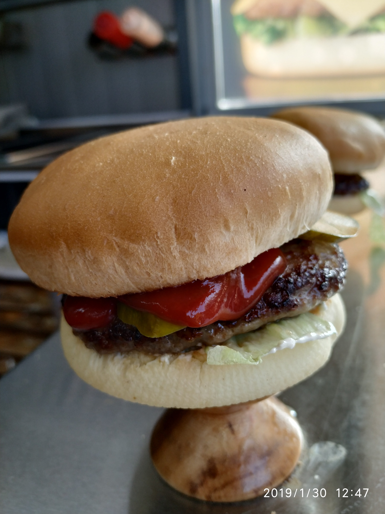

GIPPO 2019
Курс начинающих специалистов
Примечание для пользователей:
Сайт специально под мобильную версию не сделан, поэтому возможно на вашем смартфоне будет отображаться по-другому, в зависимости от браузера. Но сайт будет работать во всех браузерах, можете не переживать. В некоторых местах нужно проскролить вправо. Также, возможно изображения могут долго загружаться, так как рисунки высокого качества. В некоторых местах могут появиться иероглифы, это баг, нужно просто обновить ссылку.Содержание
ЛайфхакиВведение
Глава 1. Стандарты.
- Стандарт внешнего вида
- Стандарт чистоты
- Стандарт обслуживания
- Стандарт техники безопасности
Глава 2. Безопасность и должностные обязанности.
- Допуск лиц в торговый павильон (ТП)
- Должностные обязанности сотрудника ТП
Глава 3. Линейка продукции и производственные цеха.
- Линейка продукции (меню)
- Производство и производственные цеха
Глава 4. Стандарт принятия, хранения и возврата продукции на производство.
- Принятие и хранение продукции
- Возврат продукции в цех пищевого производства
Глава 5. Специалист по жарке на плите.
- Оборудование и инвентарь по жарке на плите
- Стандарт жарки шашлыка
- Стандарт жарки котлет
Глава 6. Специалист по сборке.
- Специалист по сборке бургеров
- Оборудование и инвентарь специалиста по сборке
- Стандарт выкладки овощей, сыра и соусов на линию сборки
- Стандарт создания тостерного эффекта булочки
- Рецептура приготовления бургеров
- Специалист по сборке степ-роллов
- Оборудование и инвентарь специалиста по сборке степ-роллов
- Стандарт выкладки овощей и соусов на линию сборки
- Стандарт приготовления степ-роллов
Глава 7. Специалист по работе на фритюрах.
- Оборудование и инвентарь специалиста по работе на фритюрах
- Стандарт приготовления мини самсы и мини хот-догов
- Стандарт приготовления картофеля фри
- Стандарт приготовления хот-дога Z7
Глава 8. Кассир ТП.
Глава 9. Учет продукции и расходных материалов.
От автора
Введение
Название компании: ТОО "begemot almaty"Логотип: Gippo
Цель компании: качественный продукт с превосходным сервисом по доступной цене!
Рабочее место: Торговый павильон (ТП)
| Дата открытия первых павильонов | Первые торговые павильоны |
|---|---|
| 06.06.2009 | Орбита и Каркара |
Расположение Gippo по Казахстану
- Алматы
- Астана
- Петропавловск
- Шымкент
- Тараз

Торговый павильон (ТП) - это современный способ организации розничной торговли. Это сооружение полу облегченной конструкции, с оснащением всем необходимым оборудованием для работы в любое время года.
Каждый сотрудник ТП - лицо компании!
Наш сотрудник это один из специалистов большой команды Gippo олицетворяющий собой стиль и имидж компании!
Наши сотрудники ориентированы на клиента и выполняют Стандарты компании для успешной реализаций продукта.
Основные стандарты компании
- Стандарт внешнего вида
- Стандарт чистоты
- Стандарт обслуживания
- Стандарт приготовления
- Стандарт техники безопасности (ТБ)
- Стандарт принятия, хранения и возврата продукции
Глава 1. Стандарты
Стандарт внешнего вида
Стандарт ношения формы и внешнего вида
- Фирменная одежда должна быть чистой и выглаженной.
- Волосы девушки аккуратно убраны (собраны под кепку или заплетены в косу), у юноши - волосы коротко пострижены и ежедневно бреются.
- Обязательно принимать душ перед рабочей смены (чистый, свежий запах телая).
- Руки должны быть чистые, ухоженные; ногти коротко стрижены (бесцевтный лак для ногтей).
- Отсутствие украшений: кольца, браслеты, цепи. Только обручальное кольцо.
- Обязательное ношение униформы в рабочее время
- При выходе из павильона обязательно снять фартук, нарукавники, бейсболку и аккуратно сложить в шкаф.
- При входе в торговый павльон (ТП) соблюдать последовательность (в начале моем руки, а потом надеваем форму).
- Форма надевается в задней части павильона (в подсобном помещении).
- Запрещается ношение наушников, жевание жвачек, использование в личных целях смартфонов.
Униформа сотрудника ТП
| № | Летняя форма | Срок годности | № | Зимняя форма | Срок годности |
|---|---|---|---|---|---|
| с 15 апреля по 14 октября | с 15 октября по 14 апреля | ||||
| 1 | Бейсболка | 7 мес. | 1 | Бейсболка | 7 мес. |
| 2 | Футболка | мес. | 2 | Толстовка | 10 мес. |
| 3 | Фартук | 6 мес. | 3 | Фартук | 6 мес. |
| 4 | Джинсы (темные оттенки) | 4 | Нарукавники | 5 мес. | |
| 5 | Жилетка (кассир/возможно всем) | ||||
| 5 | Носки | 6 | Джинсы (темные оттенки) | ||
| 6 | Закрытая обувь | 7 | Носки | ||
| 8 | Закрытая обувь | ||||
- с первой летней формы в размере 5710 тенге;
- с первой зимней формы в размере 5710 тенге.
Стандарт чистоты
1. Мытье рук
| 10 основных причин мытья рук | |
|---|---|
| 1 | Перед началом работы |
| 2 | После посещения уборной |
| 3 | После курения и употребленя еды |
| 4 | После окончания уборки |
| 5 | Перед приготоалением пищи |
| 6 | После работы с деньгами |
| 7 | После кашля и чихания |
| 8 | После смены рабочей зоны |
| 9 | После смены мусорных пакетов или уборэ рабочей зоны |
| 10 | После прикосновения с волосами, лицом |
2. Использование перчаток
Одноразовые перчатки:- при приготовлении продукций;
- при учете продукции.
- при мытье пола в павильоне;
- при мытье посуды;
- при мытье оборудования
3. Обязанности дежурного
- Дежурный обязан следить и поддерживать порялок и чистоту как внутри, так и снаружи павильона в течение всей смены;
- Установленное время проверки состояния павильона в целом и устранение загрязнений (пол, раковина, стеклопакет), каждый час;
- Каждый час проверка мусорного ведра, если требуется - замена пакета;
- Вытирание подоконника и передней стенки павильона, стекол, поручня;
- Следить за чистотой прилегающей территории павильона в радиусе 3 метров;
- Следить за выполнением санитарных обязанностей сотрудников павильона.
4. Санитарный день
Проводится 1 раз в неделю по утвержденному графику, начинается за 1,5 часа до открытия рабочей смены и проводят сотудники всей смены.По решению администратора/супервайзера привлекаются сотрудники с других смен.
Порядок проведения санитарного дня:
- Использование специальных моющих средств;
- Комет;
- Фэри;
- Порошок;
- Мускул;
- Тряпок;
- Мочалка.
- Влажная уборка внутренних и наружных стен и стеклопакета
- Влажная уборка торгового и жарочного оборудования и рабочего инвентаря;
- Снимается плита и моется приточный стол;
- Влажная уборка столов, полов, тумб, шкаф;
- Влажная уборка полового покрытия, плинтуса;
- Влажная уборка поручня, ролставни, светильников, лайт бокса "Gippo", неоновой вывески "Gippo" водосточной трубы, жироуловителя, швеллера.
Стандарт обслуживания
1. Стандарт упаковки бургеров:- Взять соответствующую обертку для бургера за противоположные углы (лево-право), накрыть бургер;
- Опускать ладони вниз, слегка прижимая гамбургер, затем снять с "грибка";
- Следует аккуратно заворачивать гамбургер с других сторон, не оставляя углов и не прикасаясь руками к продукту;
- Поместить завернутый гамбургер в крафт пакет "Gippo" (бегемот)
- 1-2 единицы продукта положить в маленький крафт пакет, напиток положить в пакет;
- 3 и более единиц продукта и фри положить в большой крафт пакет, затем все вместе положить в маечку . Кофе и какао выдаются в руки с салфеткой.
- Готовый степ-ролл аккуратно шипцами снять с пресса и вложить в заранее приготовленную специальную упаковку, при этом не повредив сам продукт;
- В случае повреждения продукта (развернулся, порвался, сломался), необходимо собрать новый ролл.
- Готовый хот-дог аккуратно вложить в заранее приготовленную специальную упаковку,при этом не повредив сам продукт;
- Поместить хотдог в крафт пакет "Gippo".
Стандарт техники безопасности (ТБ)
При возникновении пожара в торговом павильоне сотрудникам необходимо:- Сотруднику, обнаружившему возгорание немедленно оповестить всех сотрудниково возгорании криком "Пожар!";
- Ближайший сотрудник находящийся у автомата должен отключить главный автоматв щите питания;
- Кассиру изъять денежные средства, документы и обеспечить их сохранность вне ТП, так же доложить непсредственному руководителю (Супервайзера);
- Сотрудникам приступить к локализации (тушению)очага возгорания согласно инструкции по применению порошковых и углекислотных огнетушителей;
- Если очаг возгорания не удалось потушить, кассир обязан звонить по номеру "101".
Глава 2. Безопасность и должностные инструкции
Допуск лиц в ТП
1. Беспрепятственный допуск в павильон имеют:- Ген.директор
- Зам ген.директора
- Директор филиала
- Супервайзер
- Администратор
- Куратор
- Тренеры
- Инженер по ТБ
- Аудитор (согласно плана проверок)
- Сотрудники текущей смены
- Инкассаторы (согласно по плану инкассации и предъявленным документам)
- Специалисты тех.отдела (согласно заявке)
- Бухгалтерия (согласно плану ревизии основных средств)
3. Все остальные сотрудники компании допускаются в ТП только после установления цели прибытия с разрешения супервайзера/администратора. В случае отсуствия супервайзера/администратора, кассир может установить должность прибывшего сотрудника компании по фирменному бланку аудита и удостоверению. Нахождение проверяющих (контролирующих) лиц в зоне отвесттвенности кассира, без униформы, запрещается.
4. У контролирующих гос.органов необходимо попросить показать предписание на проверку. Предписание должно быть на фирменном бланке с регистрационными номерами, с указанием сроков проверок, данными проверяющего лица. У проверяющего лица необходимо попросить документ, удостоверяющий личность, оюязательно вызвать супервайзера/администратора и предложить подождать его около ТП (не запуская в ТП).
5. Наличие в ТП посторонних лиц считается нарушением:
- друзей;
- знакомых;
- родственников;
- одноклассников/согрупников
- сотруднико ТП, не осуществляющую рабочую деятельность в данный момент
Должностные обязанности сотрудника ТП
Работник обязан:- Прибыть на работу в ТП за
20 мин30 мин до открытия павильона. - Проверить оборудование и рабочий инвентарь на предмет наличия и технического состояния
- осуществлять прием продукции: котлет, булочек, продукции холодного и горячего цехов по кол-ву, фри по кол-ву пакетов, указанному сопроводительной накладной (принимаемую продукцию нужно проверить по внешнему виду, цвету, вкусу, запаху и на ощупь). В случае несоответсвия продукции незамедлительно сообщить кассиру ТП
- Предоставить корректные данные кассиру по кол-ву принимаемой продукции и расходного материала
- Подготовить рабочее место к началу рабочего дня в соответствии с установленными правилами.
- выполнять все правила и стандарты
- поддерживать чистоту и порядок на рабочес месте
- поддерживать стандарт внешнего вида и санитарно-гигиенические требования к работнику
- следить за исправностью и техническим состоянием оборудования (плита, вытяжка, холодильник для котлет, фритюр, пресс, мороженый аппарат и др. , при обнаружении неисправности незамедлительно сообщать супервайзеру ТП.
- внутренней безопасности ТП
- ТБ вовремя работы с оборудованием и инструментами
- противопожарной безопасности
- жарить картофель фри согласно стандарту
- разогревать мини-самсы и мини-хот-доги согласно стандарту
- готовить хот-дог z7 согласно заказу
- контролировать недостачу продукции
- жарить котлеты в соответствии со стандартом
- после каждой жарки чистить плиту от остатков котлет, жира и масла
- Соблюдать ротацию и хранение котлет
- контролировать недостачу продукции
- выкладывать овощи и соусы, согласно стандарту
- при поступлении заказа собирать бургеры и степ-роллы в соответствии со стандартом
- аккуратно заворачивать бургеры в упаковку и аккуратно упаковать роллы в упаковку для ролла
ну вообщем аккуратно упаковать :)
- Соблюдать ротацию и хранение булочек, тортильи, продукцию холодного цеха
- контролировать недостачу продукции
По окончании рабочей смены отключить оборудование, произвести снятие остатков продукции(котлет, булочек, фри, сыра, овощей, расходного материала и т.д.)путем перерасчета и передать остаток кому? правильно, кассиру, кому же еще
Выходить на замену в экстренных случаях по вызову супервайзера
При поступлении на работу и в период работы проходить предварительный и периодические медосмотры.
На рабочем месте носить только фирменную одежду в опрятном и чистом состоянии.
Проходить в обязательном порядке инструктаж по охране труда и технике безопасности.
Принимая и сдавая смену, проводить уборку рабочего места.
Соблюдение стандарта чистоты в ТП:
- в обязательном порядке участвовать в уборке павильона при проведении санитарного дня (сандень);
- ответственно выполнять обязанности дежурного ТП в соответствии с графиком дежурства
Техника безопасности и охрана труда:
- знать и соблюдать требования и меры ТБ по сохранению здоровья при исполнении своих должностных обязанностей, а также требования противопожарной безопасности;
- проходить инструктажи по ТБ, ВП и ПБ.
Глава 3. Линейка продукции и производственные цеха
Линейка продукции (меню)
| № | Бургер | |
|---|---|---|
| Гамбургер | Чизбургер | |
| 1 | Говяжий | Говяжий |
| 2 | Куриный | Куриный |
| 3 | Двойной говяжий | Двойной говяжий |
| 4 | Двойной куриный | Двойной куриный |
Бигсайз чизбургер - это всегда Большой, всегда Двойной, всегда с Сыром
Степ-ролл - это Европейский Ролл с котлетой, с овощами, завернутый в кукурузную лепешку Тартилья
| № | СТЕП-РОЛЛ | Особенности |
|---|---|---|
| 1 | Говяжий | Mайонез-20г, Cоус Cальса-40г |
| 2 | Куриный | Соус Пикантный-20г, соус Пикантный - 20г |
КОМБО - это одна продукция из меню +ФРИ + НАПИТОК (ПЕПСИ, АСУ, ПИАЛА)
| № | Наименование комбо | Бургеры | Фри (г) | Напиток |
|---|---|---|---|---|
| 1 | Комбо ролл | Говяжий или куриный | 110 | Пепси, Асу, Пиала |
| 1 | Комбо Классик | Говяжий или куриный | 110 | Пепси, Асу, Пиала |
| 1 | Комбо Чиз | Говяжий или куриный | 110 | Пепси, Асу, Пиала |
| 1 | Комбо Дабл Чиз | Говяжий или куриный | 110 | Пепси, Асу, Пиала |
| 1 | Комбо Бигсайз | Говяжий или куриный | 110 | Пепси, Асу, Пиала |
| 2 | Комбо Кидс | 2 мини бургера с куриной котлетой и куриным соусом, без овощей | 80 | Детский сок +игрушка |
| Картофель фри | Стандартная порция | Детская порция фри |
|---|---|---|
| Вес в сыром виде: | 110г | 80г |
| Вес в готовом виде: | 75-80г | 60-65г |
| Мини самса - куриная с кунжутной посыпкой, говяжья без посыпки. Порции: маленькая-9шт, большая-15шт. | |
| Мини доги - добавляется 2 вида соуса: сырный (30г) и кетчуп (30г), так же можно сделать микс соусов по 15г. Порции: маленькая-9шт, большая-15шт: | |
| Ход-дог - куриный или говяжий. Так же имеется топпинги в виде жареного лука (6г), халапеньо-2-3 дольки. | |
| Салат - Цезарь. |
Производство и производственные цеха
| Мясной цех | Горячий цех | Пекарня | Холодный цех |
|---|---|---|---|
| Котлеты: 1.Большая: Вес сырой - 120г Вес готовой - 95-100г Говяжья - 150мм Куриная - 140мм 2.Стандартная: Вес сырой - 80г Вес готовой - 60-65г Говяжья - 130мм Куриная - 120мм 3.Детская: Вес сырой - 34г Вес готовой - 25-28г Куриная - 80мм Срок годности котлет: 24 часа t+2+6C |
Мини самса: Говяжья (без кунжута) Куриная (с кунжутом) Порции: Маленькая - 9шт Большая - 15шт Срок годности: 36ч t+2+8C Мини хотдоги: Порции: Маленькая - 9шт Большая - 15шт Срок годности: 36ч t+2+8C Соусы: Соус Сырный Соус Сальса |
Булочки 1.Большая: Вес - 95-100г Высота - 4,5-5см Диаметр - 110мм 2.Стандартная: Вес - 60-65г Высота - 4,5-5см Диаметр - 100мм 3.Детская: Вес - 25-28г Высота - 4,5-5см Диаметр - 70мм Срок годности: 36ч t-комнатная Тартилья: Кукурзная лепешка Диаметр - 28-30см Срок годности: 36ч t-комнатная Багет: Вес - 50-5г Длина - 14-16см Срок годности: 36ч t-комнатная Слоеное тесто для мини самсы |
Овощи: Салат Айсберг (не промывается) Маринованные огурцы Свежие огурцы Помидоры Сыр Кетчуп Майонез Соусы: Соус Куриный Соус Пикантный Срок годности соусов и овощей: 24ч Салат Цезарь: Срок годности: 24ч |
Ротация - это правило, по которому необходимо продавать сначала продукцию, оставшуюся с прошлой смены (котлеты, булочки, овощий, тартиля, багеты, соусы и др.) или СП (срочная продажа), а потом свежую (продукцию с последнего довоза(прихода));
Срочная продажа (СП) - "СП" это надпись пишется на продукции пришедшая с 12 часовых павильонов, производства или выездной торговли, означает, что срок хранения продукции меньше установленного, и она должна быть продана в первую очередь.
Глава 4. Стандарт принятия, хранения и возврата продукции на производство
Принятие и хранение продукции
1. Принятие продукции
Перед принятием всей продукции необходимо в обязательном порядке внимательно проверить:
- дату изготовления;
- качество продукта;
- вес
Все данные занести в рабочий журнал приема продукции
В случае если дата, качество или вес не соответствует стандартам и количеству, указанному в сопроводительной накладной, в обязательном порядке сообщить кассиру, либо супервайзеру при его наличии в ТП, и организовать отправку возврата в цех Пищевого производства.
Работники ТП ОБЯЗАНЫ строго соблюдать ротацию всей продукции
Ротация - это правило, по которому необходимо продавать сначала продукцию, оставшуюся с прошлой смены (булочки, котлеты, соусы, овощи и т.д.) или СП, а потом свежую.
Правило, работающее по принципу "Первый пришел, первый ушел".
2. Хранение продукции:
| Котлеты: | |
|---|---|
 |
Котлеты - следует хранить в открытых ящиках в котлетном холодильнике при температуре +2 +60 Необходимо проводить ротацию котлет с каждым довозом продукции, перемещая листы с остатками котлет в верхнюю часть ящика для котлет. Котлеты следует вынимать из холодильника в момент поступления заказа. Строго соблюдать срок годности котлет - 36 часа с момента изготовления. |
| Булочки: | |
 |
Булочки - следует хранить под пищевой пленкой в закрытых ящиках. Необходимо проводить ротацию булочек с каждым довозом продукции, перемещая листы с остатками булочек в верхнюю часть ящика. Для сохранности качества следует вынимать булочки в момент поступления заказа. Строго соблюдать срок годности котлет - 36 часа с момента изготовления. |
| Лепешки тартилья | |
|---|---|
Лепешки тартилья-следует принимать тщательно проверяя каждую, и отбраковывать поврежденные, горелые, сухие, диаметром менее 28-30см Следует принимать лепешки тартилья в пластиковом контейнере, в плотно закрытых пакетах при комнатной температуре. Необходимо соблюдать срок годности - 36ч, с момента изготовления. Вынимать лепешки сооттвестственно количеству заказов, плотно закрывая пакет с отстатками. Необходимо проводить ротацию лепешек с каждым довозом, перемещая пакеты с остатками лепешек в верхнюю часть контейнера. Каждую партию тортильи нужно проверить сжатием. Если появилась небольшая дырочка до 2см, то тортилью берем в работу, более 2см - списываем в брак. Если во время сборки тартилья порвалась, готовим ролл из новых продуктов, а прежник списываем. |
|
| Продукция холодного цеха | |
 |
Овощи, сыр: перед принятием овощей, сыра, необходимо проверить дату на пакетах, также проверить свежесть продуктов. |
| Соусы | |
|
Соусы, кетчуп, сальса, пикантный, майонез - следует обязателтно хранить в холодильнике при температуре 5-80C в летний период, в зимний период: если позволяют площади холодильника. Необходимо проводить ротацию соусов с каждым довозом, переставляя остатки соусов ближе к дверце холодильника. В летний период, если площади холодильника не позволяют хранить все соусы по стандарту, по мере освобождения ящика для котлет, необходимо складывать друг на друга пустые листы (не более 2-х листов в одну ячейку), помещать соусы в нижнюю часть холодильника. Соусники следует вынимать их холодильника по необходимости. |
|
Возврат продукции в Цех пищевого производства
- По окончанию рабочей смены, все остатки продукции, необходимо пересчитать/
- Картофель фри, овощи, какао/кофе необходимо взвесить. Остается в павильоне.
- Все данные занести в остатки, журнал и в дропбокс.
Складывать по окончанию работы ТП остатки овощей в контейнер в следующем порядке:
- Сыр
- Марин.огурцы
- Свеж.огурцы
- Помидоры
- Айсберг
- Соусники
Отдельно в коробку или ящик для соусов носиком вверх.
- На 12 часовых ТП остатки по продукции холодного цеха возвращаются на производство;
- На 24-часовых ТП продукция холодного цеха передается ночной смене по количеству и весу.
Глава 5. Специалист по жарке на плите
Специалист по жарке на плите
1. Оборудование специалиста по жарке на плите
Электрическая мармитная плита для жарки котлет |
|||
Вытяжной зонт для устранения паров и запахов |
|||
 |
Котлетный холодильник для хранения мясных полуфабрикатов |
||
Если в ТП не работают электрические приборы, электроплита, холодильник, или розетки, то надо проверить в щитовой Расположении рубильников - вверх - включены, вниз - выключены. Или проверить включение вилку в розетку.
2. Инвентарь специалиста по жарке на плите
 |
Шпатель- 2 шт; |
 |
Скребок - предназначен для чистки плиты от остатков котлет и масла. |
 |
Шипцы - предназначены для снятия готовых котлет с плиты и выкладки котлет на подготовленную нижнюю часть булочки либо на чашку для готовых котлет. |
 |
Металлический разнос - на него складывается Инвентарь. |
 |
Маслосборник - в него собирается весь жир, необходимо следить за наполнением в течение дня. |
|
Маленькая Металлическая чашка - предназначена для выкладки готовых котлет. |
|
 |
Секундомер |
3. Стандарт жарки котлет
-
Для начала жарки котлет необходимо налить 10-15г растительного масла на разогретую плиту. Если плита не используется в течение 15 мин, и жарочная поверхность плиты высохла, необходимо добавить 5-6г масла. Шипцами мы берем только готовую котлету.
- Куриная котлета жарится по бокам или в нижней части плиты.
- Говяжья котлета жарится по середине. -
Котлеты необходимо переворачивать шпателем, чтобы ее не повредить. Вовремя жарки котлеты нельзя приподнимать и проверятьее готовность. Нельзя давить на котлету, если ее середина начинает подниматься. Котлету можно перевернуть не более 4 раза.
-
Необходимо регулярно чистить жарочную поверхность плиты от остатков котлет. Остатки использованного масла накапливаются в маслосборник, который находится в нижней части плиты. По мере наполнения маслосборника его освобождают, выливая масло во флягу для отхода масла. Затем следует отправить флягу в цех.
Стандарт жарки котлет для классического бургера
Котлету из курицы следует жарить до золотисто-оранжевого цвета.
Общее время жарки: 2,5-3мин:
- 1ая сторона: 1,5-2мин
- 2ая сторона: 1мин
Котлету из говядины следует жарить до золотисто-коричневого цвета.
Общее время жарки: 3,5-4мин:
- 1ая сторона: 2-2,5мин
- 2ая сторона: 1,5мин
Температура жарки котлет: 220-3000С
Необходимо проводить чистку плиты после жарки каждой котлеты. Во время наибольших продаж или при поступлении большого заказа, на плите можно разместить не более 18 котлет.
Стандарт жарки котлет для бигсайз чизбургера
Котлету из курицы следует жарить до золотисто-оранжевого цвета.
Общее время жарки: 3-3,5мин:
- 1ая сторона: 2мин
- 2ая сторона: 1,5мин
Котлету из говядины следует жарить до золотисто-коричневого цвета.
Общее время жарки: 4,20мин:
- 1ая сторона: 2-2,20ин
- 2ая сторона: 2мин
Температура жарки котлет: 220-3000С
Необходимо проводить чистку плиты после жарки каждой котлеты. Во время наибольших продаж или при поступлении большого заказа, на плите можно разместить не более 12 котлет.
Глава 6. Специалист по сборке
Специалист по сборке продукции
1. Сборщица бургеров
1.1. Оборудование и инвентарь специалиста по сборщицы продукции
| Оборудование сборщицы | |
|---|---|
|
Тостер для булочек: Включаем вилку в розетку, ставим терморегулятор на цифру 1 (в некоторых павильонах и при большом количеству заказов приемлемо ставить терморегулятор га 2-3). |
|
Холодильник - для хранения продукции холодного цеха. |
|
| Инвентарь сборщицы | |
 |
Две большие гастроемкости - предназначены для выкладки салата Айсберг и мариованных огурцов. |
 |
Четыре маленьких гастроемкости - предназначены для выкладки свежих оргурцов, майонеза, помидоров и сыра. |
 |
Шипцы - 2 шт: предназначены для выкладки овощей, в процессе сборки бургеров. А так же для котлет в процессе для сборки. |
 |
Силиконовая лопатка - для майонеза, исполбзуется для нанесения майонеза на поверхность нижней части булочки. |
 |
Нож и доска - предназначены для нарезки помидоров. |
1.2. Стандарт выкладки овощей, сыра и соусов на линию сборки
|
Сыр выкладываем в маленькую гастроемкость не более 10шт. В час пик не более 20шт. |
|
|
Майонез - следует выкладывать аккуратно в маленькую гастроемкость с помощью силиконовой лопатки. В период работы майонез нужно постоянно перемешивать. |
|
|
Огурцы свежие - выложить в маленькую гастроемкость. |
|
 |
Оргурцы маринованные выложить в большую гастроемкость. |
|
Салат Айсберг - выложить в большую гастроемкость. |
|
|
Помидоры для бургеров следуе нарезать в подсобном помещении: толщина нарезанных помидоров: 3-4мм. Затемаккуратно выложить в длину лесенкой в маленькую гастроемкость. Верхнюю и нижнюю часть помидора не использоватб отправить на списание. |
1.3. Стандарт создания тостерного эффекта булочки
Тостерный эффект - это золотистая хрустящая корочка, которая образуется при подогревании булочки на тостерной плите. В случае если края булочки слегка подгорела - допускается почистить ее ножом в подсобном помещении. Но если булочка сильно подгорела, и появился запах гари, в этом случае булочка снимается с продажи и отправляется в цех.
 |
Стандарт булочка для классического бургера |
 |
Вес детской булочки - 25-28г |
 |
Булочка для бигсайз бургера |
Для создания тостерного эффекта булочка подогоревается 30-60сек с внутренной стороны.
Ротация - это правило, по которому необходимо продавать сначала продукцию, оставшуюся с прошлой смены.
Срочная продажа (СП) - эта надпись пишется на прродукции пришедшей с 12 часовых павильонов, производства и выездной торговли, означает, что срок хранения продукции меньше установленного, и она должна быть продана в первую очередь.
1.4. Рецептура приготовления классического бургера
|  |
Гамбургер говядина
|
Чизбургер говядина
|
|
|
Гамбургер курица
|
Чизбургер курица
|
Все овощи соусы в стандартные бургеры добавляются по 12г
Исключение: помидоры - 1 кружочек и сыр - 1 пластинка, мар. и свеж. огурцы по 2-3 дольки.
1.5. Рецептура приготовления классического двойного бургера
|
Двойной гамбургер говядина
|
Двойной чизбургер говядина
|
||
|
Двойной гамбургер курица
|
Двойной чизбургер курица
|
| Бигсайз чизбургер говядина |
|
|---|---|
| Бигсайз чизбургер курица |
|
Дополнительный продукт для бигсайз чизбургера:
- Жареный лук - 15г
- Перец халапеньо - 15г
Оборудование и инвентарь специалиста по сборке степ-роллов
| Оборудование сборщицы степ-роллов | |
|---|---|
 |
Включение:
|
| Холодилник для хранения продукции холодного цеха | |
| Инвентарь сборщицы степ-роллов | |
|
Большая гастроемкость предназначена для выкладки салата Айсберга. |
|
Четыре маленьких гастроемкостей предназначены для выкладки майонеза, помидоров, жаренного лука, холопенья. |
|
|
Маленькая Металлическая чашка предназначена для выкладки готовых котлет. |
|
Силиконовая лопатка предназначена для нанесения майонеза на тортилья. |
 |
Силиконовая кисточка предназначена для нанесения масла на степ-ролл (1г). |
|
Шипцы предназначена для выкладки овощей на степ-ролл. |
|
Нож и доска предназначены для нарезки помидоров. |
|
Секундомер |
Стандарт выкладки овощей и соусов на линию сборки
|
Салат Айсберг выложить в большую гастроемкость. |
|
|
Майонез следует выкладывать аккуратно в маленькую гастроемкость с помощью силиконовой лопатки. В процессе работы майонез необходимо периодически перемешивать. |
|
|
Помидоры нарезать пополам, а затем каждую половинку на дольки по 3-4мм, выложить в маленькую гастроемкость. |
Стандарт приготовления степ-роллов
| Степ-ролл с говядиной | |
|---|---|
 |
|
|
|
| Степ-ролл с курицей | |
|
|
|
|
- Завернуть ролл по стандарту: длина-25см, ширина-5см
- Ролл смазать маслом перед тем, как положить в пресс.
- Ролл складываеть в упаковку шипцами, потому что ролл горячий, необходимо соблюдать технику безопасности.
Глава 7. Специалист по работе на Фритюре
Специалист по работе на Фритюре
Оборудование специалиста по работе на фритюрах
| Оборудование для приготовления картофеля фри | |
|---|---|
 |
Включение:
Оранжевый индикатор отображает нагрев масла, если лампа индикатора погасла, значит температура, выставленная на терморегуляторе, достигнута. Выключение:
|
| Морозильник для хранения хри | |
| Микроволновая печь для разогревания мини хот-догов и мини самсы | |
| Оборудование для хот-догов: | |
|
Подготовка рабочего места и оборудования:
|
|
|
Подготовка раюочего места и оборудования:
|
|
|
Включение:
|
Инвентарь специалиста по работе на Фритюре
| Инвентарь для приготовления фри | |||
|---|---|---|---|
| Круглая Металлическая чашка для перемешивания готового фри с солью | Солонка для процесса соления готового фри | ||
| Весы для взвешивания необходимого кол-ва фри для жарки |  |
Сетка 2шт для жарки картофеля фри | |
 |
Лопатка для распределения готового фри по упаковкам |  |
Металлическая Кружка и ситечко для того, чтобы чистить остатки фри во фритюре |
|
Секундомер | Круглая пластиковая чашка для взвешивания фри | |
| Теплодержатель для выкладки готового фри и распределения его по упаковкам | |||
| Инвентарь для готовки хот-догов | |||
| Корзина для приготовления куриных и говяжьих колбасок | Шипцы для сборки хот-догов и для колбасок | ||
|
Секундомер 2шт | |
Две маленьких гастроемкостей для выкладки топпинга (Голландский жаренный лук и Халапеньи). |
|
Большие гастроемкости 3шт | ||
Замена масла Фритюр:
- Отключаем фритюр,даем остыть маслу. Снимаем нагревательные элементы
- Открываем флягу для слива масла
- Вынимаем емкость фритюра
- Сливем масло вместо с мелкими частицами на дне емкости, во флягу
- Тщательно промываем емкость с моющими средствами, затем ополаскиваем емкость и насухо протираем сухой тряпкой
- Устанавливаем емкость на место, одеваем нагревательные элементы и заново наливаем масло до отметки.
Руководство по замене фритюрного масла для ФРИ:
- Наливаем фритюное масло ровно между отметками "MIN" и "MAX", это 6,5л
- После приготовления 170 порции фри, производим долив масла 1л
- После приготовления 300 порции фри, производим долив масла 1л
- После приготовления 450 порции фри, производим долив масла 1л
- После приготовления 600 порции фри, производим долив масла 0,5л
- После приготовления 750 порции фри, производим полную замену масла
- 10 литров масла хватает на 750 порций.
Стандарт приготовления мини самсы и мини хот-догов
- Принимать мини самсы и мини хот-доги согласно накладной по штучно и по видам: с курицей с кунжутной посыпкой, говяжьи - без
- Хранить в холодильнике при температуре +5+8С
- Срок годности 36ч
Маленькая порция: 6шт; Большая порция: 9шт
Последовательность разогрева мини самсы и мини хотдогов
- При поступлении заказа специалист по жарке на фритюре дает кассиру обратную связь о принятии заказа ("Принял!")
- Достать мини самсу или мини хот-доги с холодильника, выложить в специальную чашку для разогрева согласно заказу, поставить в микроволновку и выставить на таймере печи врмя по таблице указанному ниже.
- Подготовить упаковку в соответствии с заказом (большую или маленькую)
- Разогрев: 1) нажать кнопку СВЧ, 2) нажать кнопку +10 (каждое нажатие прибавляет 10сек) выставляя время согласно таблице
- После того, как продукт разогрелся, оставить остывать в тарелке на 1 минуту при комнатной температуре
- Далее специалист разогретый продукт аккуратно выкладывает чашки в упаковку и отдает кассиру с предупреждением о готовности заказа
- Разогревать не более 24 штуки за раз. Мини самсы и мини хот-доги перекладывать аккуратно так как продукция очень хрупкая
- Для мини хот-дога есть два соуса: сырный и кетчуп. Поливать соусом сверху, согласно заказу. На одну порцию 30г соуса. После того как продукцию выложили в стакакн.
| Наименование | 6шт | 9шт | 12шт | 15шт | 18шт | 24шт |
|---|---|---|---|---|---|---|
| Самса с курицей | 20 | 30 | 40 | 50 | 60 | 70 |
| Самса с говядиной | ||||||
| Мини хот-доги |
Стандарт приготовления картофеля фри
1. Аккуратно сложите пакеты с фри в Морозильник для хранения. Никогда не бросайте замороженные упаковки с картофелем,
так как вы можете поломать фри и получить меньшее кол-во качественного продукта (-18С).
2. Картофелья жарят замороженным, предварительное размораживание - ЗАПРЕЩЕНО, иначе картофель начинает впитывать больше малса,
от чего теряет форму.
3. Перед жаркой фри, проверьте уровень масла, по отметкам во фритюре.
Выставить терморегулятор на рабочий 200-220С и разогревать фритюр в среднем 7мин. После того, как масло разогрелось, вовремя жарки
выстваляем температуру 200-220С, во время простоя 150С
4. Аккуратно высыаем необходимое кол-во порции (см. рис1) в корзину фритюра, после чего встряхиываем над урной для чистки от кусочков
льда и картофеля фри картофель опускаем в раскаленное масло и подержав 10сек, аккуратно перемешиваем фри в корзине, при жарке процедуру повторяем
2 раза, в равных временных отрезках, до конца жарки.
| Кол-во порций | Стандарт фри | Детское фри |
|---|---|---|
| 1 порция | 110г | 80г |
| 2 порций | 220г | 160г |
| 3 порций | 330г | 240г |
| 4 порций | 440г | 320г |
| 5 порций | 550г | 400г |
| Стандартный фри | Детское фри | |
|---|---|---|
| 1 порция | 2,5мин | 2,5 |
| 2 порций | 3мин | 2,5мин |
| 3 порций | 4мин | 3мин |
| 4 порций | 4,5мин | 3,40мин |
| 5 порций | 5мин | 3,50мин |
5.После жарки достать корзину фри, стряхнуть излишек маслая, поставить корзину над фритюром на 10сек, для полного стекания масла,
затем вторично встряхнуть. И пока масло стекает, готовить упаковки. Пересыпаем в отдельную емкость, солим равномерно по всей поверхности
фри, встряхиваем 2-3 раза (рис1) и выкладываем в Теплодержатель. С Теплодержателя картофель, специальной лопаткой, расфасовываем
к коробочку для фри.
6. Приготовление фри происходит по мере поступления заказа от клиентов, заранее фри не готовится.
7. Масло между партиями нагревается в течении 1 минуты в зимнее время, в летнее время в течение 30сек.
8. Регулярно удаляйте ситечком остатки продукции в масле, чтобы избежать посторонних привкусов (рис2). Не забывайте доливать масла
до уровня, между min и max. После 750 порций производится полная замена масла.
9. В павильонах с наименьшими продажами фри за день (40-50порций), замена масла осуществляется при кол-ве 400-450порций.
| Критерии нагревания масла: |
|---|
| Не разогретое масло:при опускании фри, не слышно шипениия жарки (фри впитывает в себя масла); |
| Хорошо разогретое масло:при опускании масла, слышно небольшое шипение, фри покрывается пузырями; |
| Немного перегретое масло:при опускании фри, громкий звук шипения, брызги масла поднимаются пеной вверх |
| Сильно перегретое масло:с масла идет дым. Необходимо немедленно отключить фритюр (терморегулятор выставить на "0С"). Обязательно накрыть крышкой и 10-15мин не принимать заказы. |
При соблюдении правил приготовления фри - вы получите хрустящий, золотисто-желтый картофель.
Стандарт приготовления Хот-дога Z7 на Фритюре высокого давления (ФВД)
- Перед началом работы, убедитесь, что в емкости фртюра имеется вода
- Если уровень воды ниже отметки "MININMUM", то необходимо долить воду, до отметки "MAXIMUM". Воду используем с Тибетской
- Подключить ФВД к электросети в начале рабочей смены.
- Выставить терморегулятор на ометку 100С, время разогрева 25-30мин
- Выложить колбаски в гастроемкость (1 пачку говяжьих и 1 пачку куриных) накрыть крышкой. В отсуствия заказа колбаски хранить в холодильнике при температуре +2+6
- Достать шипцами из гастроемкость необходимое кол-во колбасок опустить в ФВД в левую или в правую сторону корзины.
- Аремя приготовления колбасок 4 минуты (говяжьи и куриные). Рекомендуется закладывать в ФВД макс 20 шт за одну варку, во время приготовления крышкой не накрывать. Корзина с делением в центре для Дополнительного заказа. Одновременно можно варить в секции говядину/курицу. Первый секундомер для первого заказа, а второй для второго.
- После приготовления колбасок, достать шипцами колбаски,и уложить в гастроемкость, далее приступаем к сборке продукта.
- Раз в сутки отключать ФВД, сливать воду, тщательно промывать емкость ФВД губкой, тщательно ополоснут и залить новую воду. Не зависимости от кол-ва приготовленных колбасок.
- Важно регулярно доливать воду в ФВД каждый час, до отметки MAX, так как вода выпаривается, шипцы моем с применением моющего средства.
Стандарт приготовления Хот-дога Z7 на роликовом гриле (РГ)
- Подключить роликовый гриль к электросети в начале рабочей смены
- Выставить терморегулятор на отметку 230С, время разогрева 5-6мин
- Температура жарки колбасок 230С
- Достать из контейнера необходимое кол-во колбасок и выложить на ролики.
- Рекомендуется закладывать в РГ макс 8шт
- Время приготовления 10-11мин, колбаски выкладываем заранее для того, чтобы сократить время приготовления.
- Температура во время протсоя 110С, 40мин макс время хранения готовых колбасок на гриле.
- Важно: регулярно чистить жарочную поверхность роликов влажной тряпкой, бех моющих средств, а маслосборник, лоток, шипцы с применением моющего средства.
Стандарт приготовления Хот-догов
Хотдог говяжий:
|
|
Хотдог куриный
|
|
| Дополнительный проодукт по желанию клиента: 1. жареный лук - 6г, 2. Халапенья - 2-3шт (6-7г) | |
Глава 8. Кассир ТП
Кассир ТП "GIPPO"
| Оборудование кассира: | |
|---|---|
| Контрольно-кассовая машина (ККМ, кассовый аппарат) для выдачи фискальных чеков | |
| Пост терминал для оплаты по безналичному расчету (карточки) | |
| Каспи Ред для оплаты по безналичному расчету (карточки) | |
| Чековый принтер для распечатывания наименования заказа (номерок) | |
 |
Планшет с системой автоматизированного принятия заказов ("Торгай") |
| Холодильник для салатов Цезарь и соусов | |
| Холодильник для напитков | |
| Холодильник для Red Bull | |
| Акрилайт для Red Bull | |
| Кофе аппарат горячих напитков (кофе/какао) | |
| Детский набор | |
| Детектор купюр - необходим для проверки денежных купюр на подлинность. | |
| Инвентарь кассира: | |
| Рабочий телефон | |
| Калькулятор - предназначен для подсчета суммы заказа и расчета сдачи клиенту | |
| Монетница - предназначена для удобного приема и выдачи разменных денег (монет) | |
 |
Канцелярия |
Глава 9. Учет продукции и расходных материалов
Отвественные сотрудники ТП "GIPPO" по учету продукции и расходному материалу
Расходный материал - это часть оборотных средств, к-рые используются и расходуются каждом производственном процессе. Сотрудники ТП несут ответственность по учету, сохранности и правильном использовании расходного материала. Каждый сотрудник в начале и в конце смены предоставляет данные кассиру по количеству продукции и расходного материала. Учет расходных материалов может меняться в зависимости от количества сотрудников на павильоне.
Отвественные сотрудники ТП по учету продукции и расходного материала:
Кассир ведет учет по:
- Холодным напиткам
- Горячим напиткам (кофе/какао)
- Снимает показания кофе аппарата
- Стакакнам для кофе/какао
- Крышкам
- Соусам Heinz
- Салатам Цезарь
- Игрушкам
- Упаковка Combo kids
- Рожки для мороженого
Сборщица ведет учет по:
- Булочки
- Тортилья
- Сыр
- Продукция холодного цеха (овощи)
- Упаковки для степ-роллов
- Соусники
- Тряпки сборщицы
Жарщик ведет учет по:
- Котлетам
- Мини самса
- Мини хот-догам
- Стаканы для мини самсы и мини хот-догов
- Шпажки
- Тряпки жарщика
Фритюрщик(ца) ведет учет по:
- Картофель Фри
- Упаковка для фри
- кетчуп для фри
- Фритюрное масло
- Растительное масло
Хранение большого количества расходного материала (тряпки, салфетки, пакеты, моющие средства, упаковки, обертки и т.д.) в ТП ЗАПРЕЩЕНО!!!
Лайфхаки: